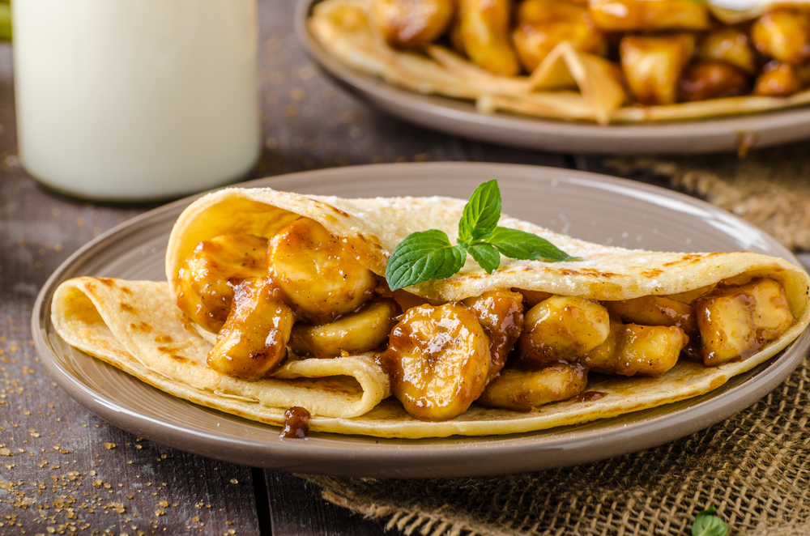

Калорійність: 157 кКал/100г Час приготування: 10 хвилин Інгредієнти: 3 банани; 20 г вершкового масла; 50 г тростинного цукру.

|
Калорійність: 157 кКал/100г Час приготування: 10 хвилин Інгредієнти: 3 банани; 20 г вершкового масла; 50 г тростинного цукру.